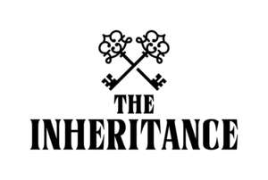

Trade Mark Journal No.2025/020 16 May 2025
UK00004197323 30 April 2025 (38)

- Class 38
- Telecommunications; telecommunications services; broadcasting; broadcasting services; audio and video broadcasting services provided via the internet; audio broadcasting; audio communications services; audio streaming; audio, video and multimedia broadcasting via the internet and other communications networks; broadcast of information by means of television; broadcast of television programmes; broadcast of cable television programmes; broadcast of radio programmes; broadcast transmission by satellite; broadcasting and transmission of pay-per-view television programs; broadcasting and transmission of cable television programs; broadcasting and transmission of television programs; broadcasting and transmission of radio programs; broadcasting of cable television programmes; broadcasting of programmes by television; broadcasting of programmes via the internet; broadcasting of television programs using video-on-demand and pay-per-view television services; broadcasting of television and radio programs via cable or wireless networks; chat room services; chat room services for social networking; communication by online blogs; communication by online video blogs (vlogs); video on demand transmissions; communication of data by means of telecommunications; communication services for the transmission of information by electronic means; communication services for video conferencing purposes; digital audio broadcasting; digital network telecommunications services; digital transmission of data via the internet; digital communications services; dissemination of television programmes relayed by cable link to television receivers; dissemination of television programmes relayed by microwave link to television receivers; dissemination of television programmes relayed by extra-terrestrial satellite; distribution of data or audio visual images via a global computer network or the internet; electronic communication by means of chatrooms, chat lines and internet forums; electronic communication services; electronic communication services for transmission by means of aerials; interactive television and radio broadcasting; interactive teletext services; internet access provider services; internet based telecommunication services; internet broadcasting services; podcasting; pay-per-view television transmission services; providing access to multimedia content online; providing access to podcasts; operating chat rooms; providing an online interactive bulletin board; providing electronic bulletin board services; providing online forums; providing online chatrooms for the transmission of messages, comments and multimedia content among users; providing on-line forums for transmission of messages among computer users; provision of telecommunication access to video and audio content provided via an online video-on-demand service; transmission of videos, movies, pictures, images, text, photos, games, user-generated content, audio content, and information via the internet; provision of telecommunication access to television programs provided via an on-demand service; telecommunication of information, computer programs and any other data; television, cable television, satellite television and subscription television broadcasting services; video text and television screen based information and broadcasting and retrieval services; news agency services; telecommunication services in the nature of sms and texting services; audio relay services; computer aided transmission of messages and/or images; radio and television broadcasting services; relaying of television programmes by extra-terrestrial satellite; streaming of television over the internet; subscription television broadcasting services; subscription television broadcasting; telecommunication services provided via internet platforms and portals; telecommunications by computer terminals, via telematics, satellites, radios, telegraphs, telephones; television and radio broadcasting; information, consultancy and advisory services relating to all the aforesaid services.
Studio Lambert Media Limited
GroupM Motion Entertainment Limited
Representative: Stobbs